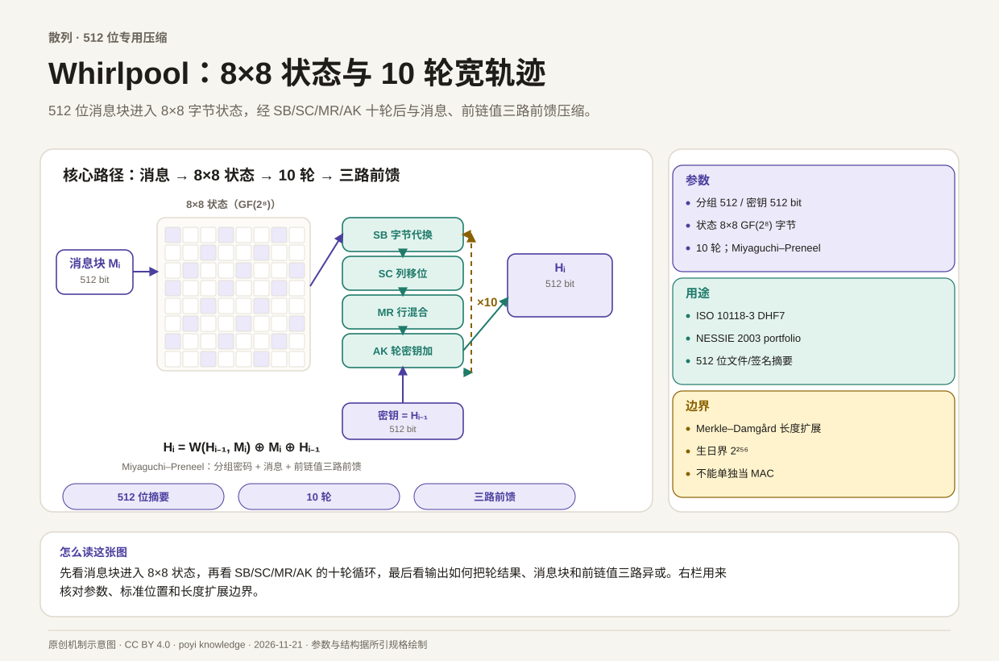
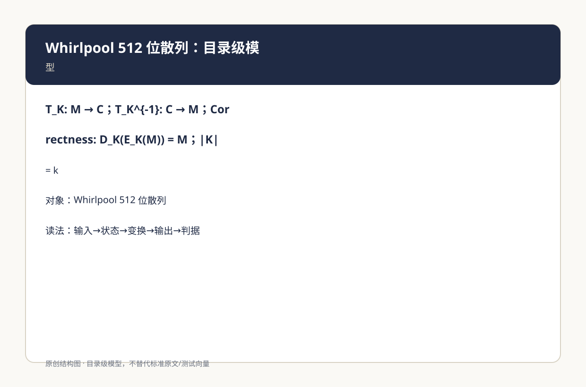

原理与机制
算法：Whirlpool 散列（Whirlpool）。### 512 位分组、512 位密钥与 8×8 状态
Whirlpool 的压缩函数是一个专用 512 位分组密码 W：分组 512 位、密钥 512 位、10 轮。状态写成 8×8 的 GF(2^8) 字节矩阵，每轮依次做字节代换 SB、列移位 SC、行混合 MR 与轮密钥加 AK；密钥编排复用同一组轮函数，只把轮常数换成密钥调度常数。### Miyaguchi–Preneel 与 Merkle–Damgård
消息按 512 位分组，压缩函数用 Miyaguchi–Preneel 构造：
H_i = W_{H_{i-1}}(M_i) ⊕ M_i ⊕ H_{i-1}
上一链值既是分组密码的密钥，又是前馈项；消息块既是被加密的明文，又是前馈项。外层是 Merkle–Damgård 迭代，消息长度上限 2^256 位，输出 512 位摘要。

为什么重要
Whirlpool 采用 AES 式的宽轨迹设计：SB、SC、MR 三层在 8×8 状态上提供字节级非线性与行列扩散，10 轮足以把单字节差异摊到整个状态。512 位摘要把生日碰撞界推到 2^256，比 256 位摘要多出一截安全边际；它不依赖 64 位乘法，8 位微控制器和 64 位 CPU 都能实现，这是 NESSIE 看重它的原因。### 实现取向
Whirlpool 的轮函数只有查表和异或，8 位实现可以把 8×8 状态放进寄存器；64 位实现则用 8 个 64 位字打包列，一次处理一整列。它没有 SHA-2 的 32/64 位加法链，也没有 SHA-3 的 Keccak 置换，性能曲线更接近 AES。
应用与实例
Whirlpool 是 NESSIE 2003 选出的散列之一，也是 ISO/IEC 10118-3 的 Dedicated Hash-Function 7；2018 年第四版仍保留它。它常被放进“SHA-2 之外的 512 位散列”清单，用于需要长摘要、又不想引入 SHA-3 新构造的旧系统。### 典型落点
它能出现在数字签名、文件完整性清单和磁盘加密的口令派生链里；这些场景看中的是 512 位输出和成熟实现，而不是新设计。新协议若没有兼容约束，通常直接选 SHA-512 或 SHA-3-512。

边界与攻击面
Whirlpool 外层是 Merkle–Damgård，天然可做长度扩展：知道 H(M) 的人不需要密钥就能算出 H(M || pad || X)。所以它不能单独当 MAC 用，必须套 HMAC 或改用带密钥的构造。作为 512 位散列，生日碰撞界是 2^256；这不等于“后量子安全”，Grover 类搜索会把理想安全强度降到约 2^256 的平方根级别。全 10 轮尚无实用碰撞，但缩减轮区分器说明轮函数并非无懈可击。Whirlpool 不提供认证加密，也不 hiding 任何输入；它只保证压缩后的摘要难以碰撞。把摘要截短会直接降低碰撞成本，512 位输出不应被截到 256 位以下再用于抗碰撞场景。
历史与背景
Whirlpool 由 Paulo Barreto 与 Vincent Rijmen 设计，2000 年提交 NESSIE；2001 年的 Whirlpool-T 调整了扩散矩阵；2003 年最终版改用新的 S 盒与循环矩阵，形成现在的 10 轮版本。它在 NESSIE 2003 进入 portfolio，随后进入 ISO/IEC 10118-3，2018 年随第四版继续保留。### 版本差异
Whirlpool-0 使用随机生成的 S 盒，Whirlpool-T 换用结构化 S 盒并调整 MR，最终版再换 S 盒与循环矩阵。三个版本的摘要互不兼容，旧系统升级时必须重新计算所有历史摘要。
技术参数与复算边界
该条目的形式模型是 (h=H(M),\quad H:{0,1}^{*}\to{0,1}^{n})。输入：输入：Whirlpool 散列的公开参数、密钥/随机数与消息；变量说明：M 任意长度消息，h 为 n 位摘要。 预期输出：按 Whirlpool 散列 的规范执行后得到可验证的输出或可比较的优势界。 复算必须给出输入、步骤、输出和单位；示例只演示流程，不替代标准测试向量。
复杂度由密钥长度、分组/状态规模、轮数、随机数质量和敌手模型共同决定；参数越界、版本差异与实现侧信道都可能使公式结论失效。已登记限制：该条目只给出形式模型与可复算步骤，不声称已完成生产实现、侧信道认证或第三方安全评估。
逐步示例与核验
形式模型与复算步骤
[h=H(M),\quad H:{0,1}^{*}\to{0,1}^{n}]
Whirlpool 散列的公开参数、密钥/随机数与消息；变量说明：M 任意长度消息，h 为 n 位摘要。1.消息填充到块边界。2.压缩函数逐块迭代。3.输出链值作为摘要。边界：公式只覆盖已登记的参数与假设；参数取值、标准版本和实现细节仍以来源为准。
参考出处
- Wikipedia search entry for Whirlpool 散列. https://zh.wikipedia.org/w/index.php?search=Whirlpool%20%E6%95%A3%E5%88%97
- Handbook of Applied Cryptography (Menezes, van Oorschot, Vanstone). https://www.cacr.math.uwaterloo.ca/hac/